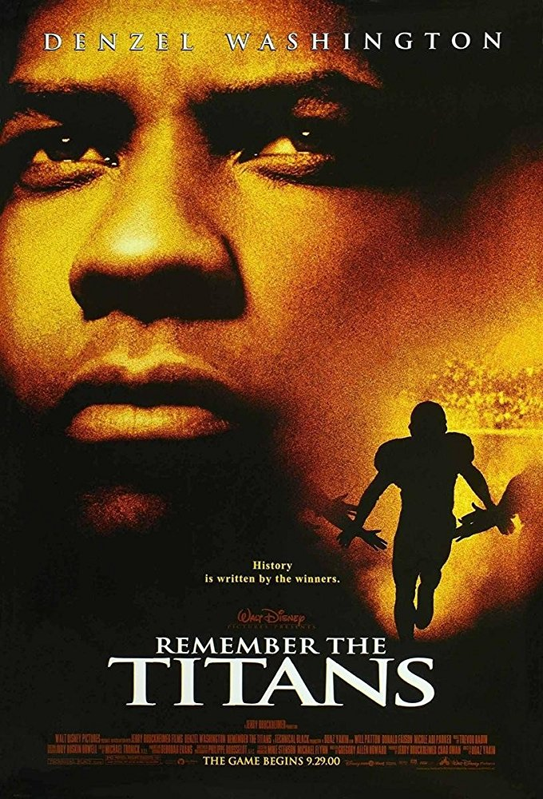
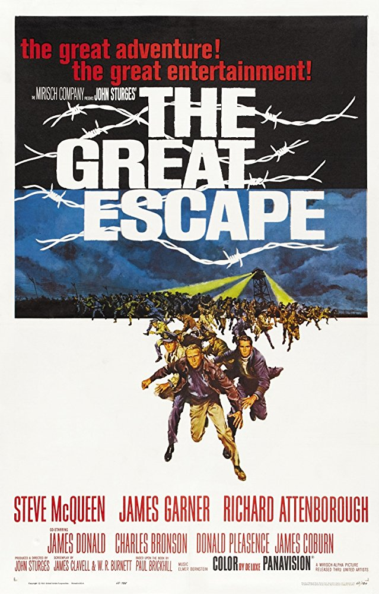

Top 5 Movies

Released: 2000
Director: Boaz Yakin
Rated: PG
Trailer Cast Plot: The true story of a newly appointed African-American coach and his high school team on their first
season as a racially integrated unit.
Released: 1972
Director: Peter Bogdanovich
Rated: PG
Trailer Cast Plot: The accidental mix-up of four identical plaid overnight bags leads to a series of increasingly wild
and wacky situations.

Released: 1963
Director: John Sturges
Rated: PG
Trailer Cast Plot: Allied prisoners of war plan for several hundred of their number to escape from a German camp during World
War II.
Released: 1974
Director: Mel Brooks
Rated: PG
Trailer Cast Plot: An American grandson of the infamous scientist, struggling to prove that his grandfather was not as insane
as people believe, is invited to Transylvania, where he discovers the process that reanimates a dead body.
Released: 1942
Director: Michael Curtiz
Rated: PG
Trailer Cast Plot: A cynical American expatriate struggles to decide whether or not he should help his former lover and her
fugitive husband escape French Morocco.
Film in the 20th century, it's the American art form, like jazz.
~Martin Scorsese~